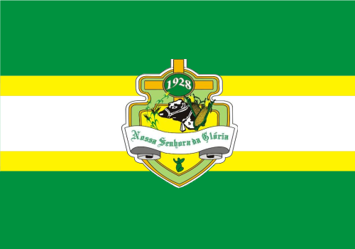

Nossa Senhora da Gloria
História
A primeira povoação na região da atual cidade recebeu o nome de Boca da Mata, dado pelos viajantes que descansavam no local. Por volta de 1600 a 1620, os ranchos ali existentes formaram uma povoação. Posteriormente, a localidade foi rebatizada quando o pároco Francisco Gonçalves Lima, fez uma campanha junto aos moradores para aquisição de uma imagem de Nossa Senhora da Glória.
O município, que ficou conhecido como a Capital do Sertão, tem a maior feira da região e acabou atingindo um desenvolvimento muito maior que a sua antiga sede, Gararu.
A evolução política de Boca da Mata iniciou-se em 1922, quando a povoação passou a ser sede do 2º Distrito de Paz de Gararu, já com a denominação de Nossa Senhora da Glória. Seis anos depois, no dia 26 de setembro, passou à condição de vila e foi desmembrada de Gararu. Nessa época o município passou a pertencer à Comarca de Capela.
No dia 1º de janeiro de 1929, a vila teve como primeiro intendente João Francisco de Souza, que construiu a prefeitura. Ele foi eleito para o período de 1930 a 1934, mas teve o mandato interrompido pelo movimento revolucionário de 1930. Segundo dados colhidos de relatórios feitos pela Universidade Tiradentes baseados no IBGE dos anos de 1991 a 1996 cedidos pela Secretaria Municipal de Educação, Esporte, Cultura e Lazer de Nossa Senhora da Glória, as terras em que hoje se erigiu o município teriam pertencido, no início do século XVII, a Tomé da Rocha Malheiros. O historiador Carvalho Lima Júnior teria afirmado que uma sesmaria de 10 léguas, a partir da Serra Tabanga, estendendo-se para o sertão, ter-se-ia tornado posse daquele beneficiário. À medida que a economia pastoril se desenvolvia pelo sertão sergipano, através da instalação de currais de gado, o consequente processo de ocupação espacial e modificação do meio para a instalação de futuras comunidades foi, pouco a pouco, devastando a mata de vegetação muito alta e densa que cobria o solo daquela região. Entretanto, por ser rota obrigatória para os que vinham de outras regiões, antes de surgirem as primeiras povoações, o local serviu de ponto de descanso no qual pernoitavam os viajantes que se dirigiam a Cotinguiba interessados na compra de açúcar e jabá Sua primeira denominação, Boca da Mata, segundo relatam os glorienses mais idosos, deu-se por conta desses viajantes, pois tinham medo de seguir suas rotas durante a noite e ali, na entrada da mata, dormiam. Disso surgiu uma expressão que se tornou comum entre eles: dormir na boca da mata. Daí a origem da toponímia.
Os ranchos que ali se fizeram por conta dessas estadas dos tropeiros, durante as viagens, originaram o primeiro núcleo habitacional. O surgimento do povoado foi se dando entre terras, onde se começou uma modesta atividade pecuária, e sítios, onde se começava a plantar mandioca, milho, feijão e algodão. Em 1922, a lei nº 835 de 6 de fevereiro, constituiu o então povoado Boca da Mata como 2º Distrito de Paz do município de Gararu. A partir daí, sua denominação oficial passou a ser Nossa Senhora da Glória. Em 26 de Setembro de 1928, deu-se a Emancipação Política do município pela lei nº 1.014. O nome Nossa Senhora da Glória, segundo informam as pessoas mais antigas do lugar, foi iniciativa do Pe. Francisco Gonçalves Lima, seu primeiro capelão, que trouxe a imagem da referida santa, consagrada então padroeira do lugar, e o sino para a primeira capela.
fonte: https://pt.wikipedia.org/wiki/Nossa_Senhora_da_Gl%C3%B3ria#GeografiaPontos Turísticos
Festa de Santos Reis
A tradicional Festa de Santos Reis do município de Nossa Senhora da Glória vai acontecer nos dias 4 e 5 de janeiro, na Praça dos Quiosques. Alma Gêmea e Danielzinho estão entre as atrações.
Festa de Santos Reais
A festa comemorada em 6 de janeiro pelos católicos, lembra quando os três reis magos, guiados pela estrela de Belém, encontraram o menino Jesus. Todo 6 de janeiro, Dia de Reis, aqueles que comemoram o Natal se preparam para desfazer a árvore, os presépios e os enfeites natalinos.
Dados Gerais de acordo com o IBGE
| Prefeito (a) | Luana Michele de Oliveira Silva Cacho |
| Site do município | https://gloria.se.gov.br/texto/1/historia-do-municipio |
| Área territorial | 758,429 km² |
| População estimada | 37.715 pessoas |
| Densidade demográfica | 42,96 hab/km² |
| IDHM | 0,587 |
| PIB per capita | R$ 15.466,17 |